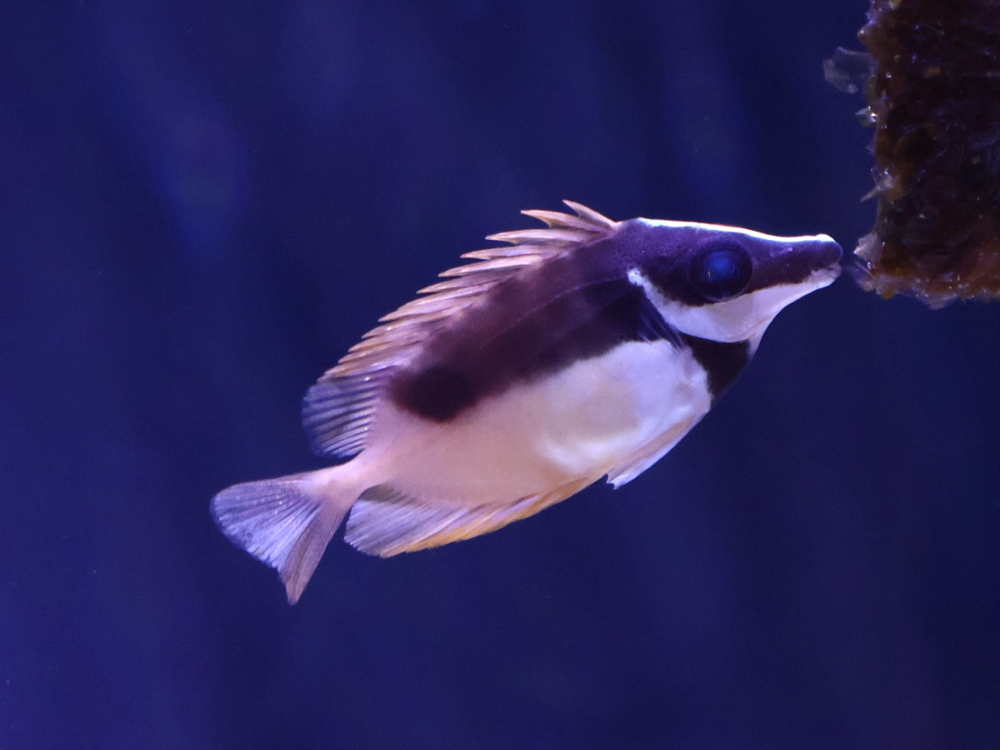
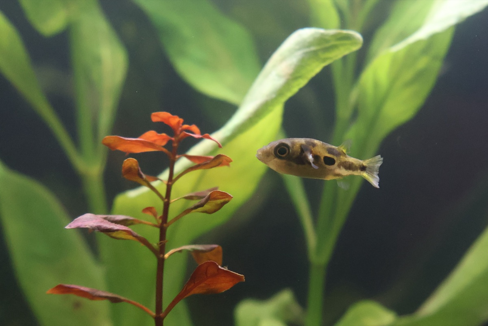
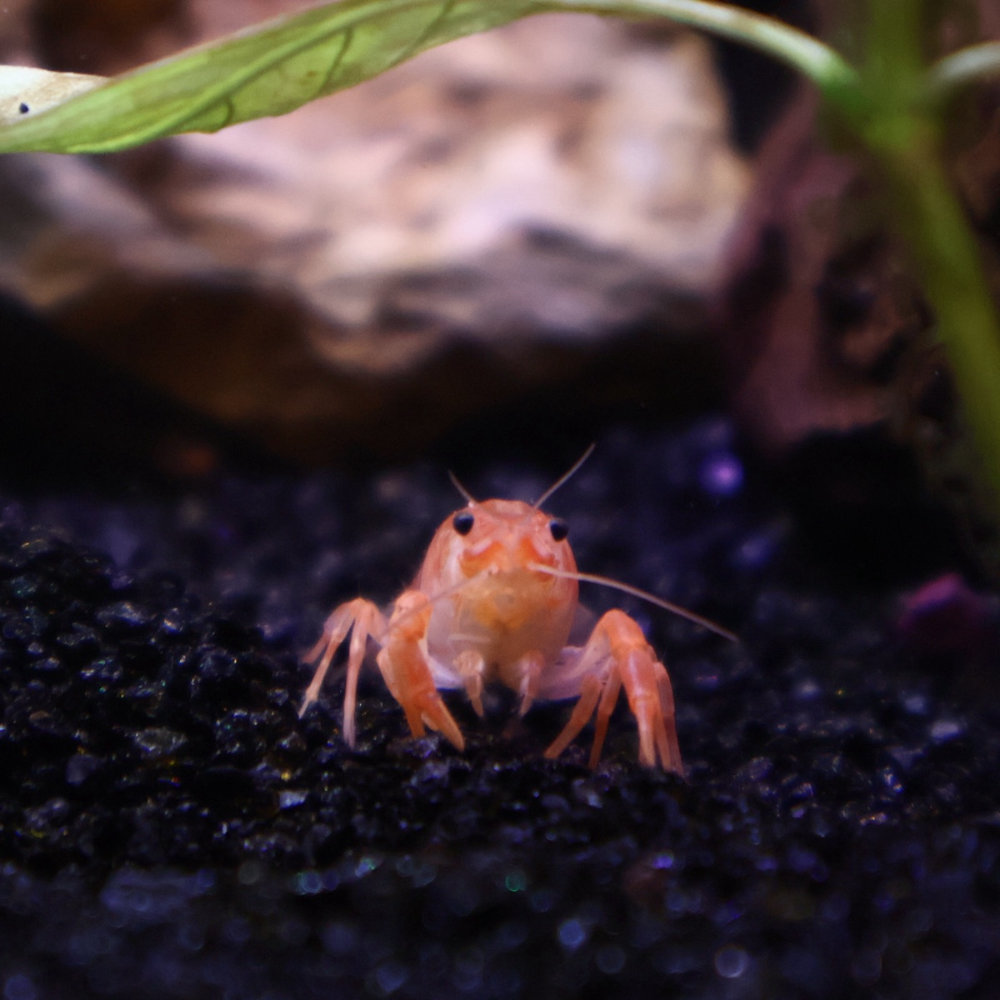

FIELD LOG — ENTRY 01 ·
Uni High Junior · Open to research & collaboration
Thomas Ballard
|
I'm a junior at University Laboratory High School, researching AI, robotics & energy — with interests in nuclear engineering, computer science, and medicine.
LOG 01 · FIELD NOTES
Field notes
- SchoolUni High · Junior
- Based inChampaign-Urbana area, IL
- FocusAI, robotics & energy
- MemberAmerican Nuclear Society
- Open toResearch & collaboration
Favorite bookThe Pearl — John Steinbeck
“For every man in the world functions to the best of his ability, and no one does less than his best, no matter what he may think about it.”
— John Steinbeck, The Pearl, ch. 4
I'm a junior at University Laboratory High School (Uni High), seeking an engineering-based premedical future with interests in nuclear engineering and computer science. I love to ask and answer questions across disciplines including philosophy, nuclear engineering, computer science, biology, and the arts. I care about advancing current nuclear research, responsibly using AI in medicine, and volunteering for my community.
More about meShow less
Away from research, I've volunteered around 100 hours at Carle Foundation Hospital across several different departments, spent summer 2026 at UIUC's nuclear camp, and took a philosophy course (PHI 103) at Parkland College. I've studied Latin for the past three years, earning three straight gold medals on the National Latin Exam. I also do Science Olympiad — four regional golds as a JV competitor in 2025–26, and varsity in 2026–27. This year I founded and lead a clean-up club at school, combining building cleanups with environmental litter pick-ups. In the first semester of sophomore year, I wrote for Uni High's school newspaper, The Gargoyle, in a journalism class, including pieces on the new Kenney Gym floor and the boys soccer season.
Hobbies
Skills & tools
From my camera



LOG 02 · ENTRIES
Log entries
LOG 03 · TIMELINE